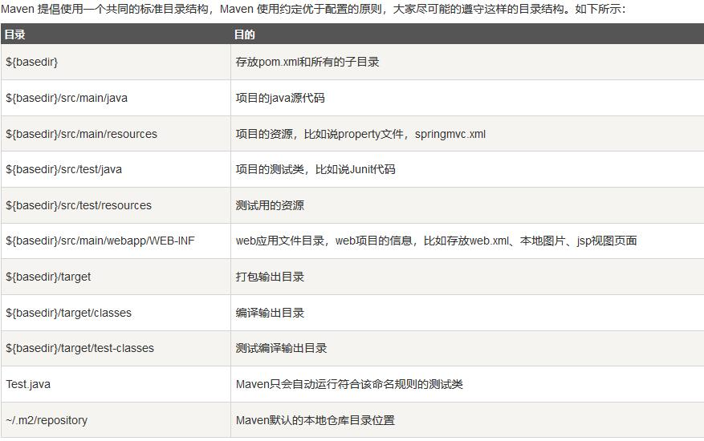

Maven配置踩坑
修改本地仓库路径：找到conf目录下的settings.xml，添加
<localRepository>PATH</localRepository>，PATH即为仓库路径。修改Maven云仓库为国内镜像站：同样在conf目录下的settings.xml下，找到
<mirrors>标签，添加1
2
3
4
5
6<mirror>
<id>alimaven</id>
<name>aliyun maven</name>
<url>http://maven.aliyun.com/nexus/content/groups/public/</url> <!-- 改为阿里云镜像 -->
<mirrorOf>central</mirrorOf>
</mirror>修改默认jdk版本1.5为期望的版本：同样在conf目录下的settings.xml下，找到
<profiles>标签，添加1
2
3
4
5
6
7
8
9
10
11
12<profile>
<id>jdk-1.8</id>
<activation>
<activeByDefault>true</activeByDefault>
<jdk>1.8</jdk>
</activation>
<properties>
<maven.compiler.source>1.8</maven.compiler.source>
<maven.compiler.target>1.8</maven.compiler.target>
<maven.compiler.compilerVersion>1.8</maven.compiler.compilerVersion>
</properties>
</profile>idea中Maven项目执行两次的问题：找到maven设置项Runner，取消勾选
Delegate IDE build/run actions to Maven。
Maven项目目录结构

项目对象模型（POM）
POM是 Maven 工程的基本工作单元，是一个XML文件，包含了项目的基本信息，用于描述项目如何构建，声明项目依赖，等等。
- 所有 POM 文件都需要 project 元素和三个必需字段：groupId，artifactId，version。
- groupId：公司或者组织的唯一标志。
- artifactId：项目的唯一ID。
Maven构建生命周期
- clean -> default(build) {validate -> compile -> test -> package -> verify -> install -> deploy } -> site
依赖管理模型
Maven 通过读取项目文件（pom.xml），找出库文件之间的依赖关系并从仓库自动下载。
引入外部依赖：先在 src 文件夹下添加 lib 文件夹，然后将工程需要的 jar 文件复制到 lib 文件夹下。然后添加以下依赖到pom.xml：
1
2
3
4
5
6
7<dependency>
<groupId>xxx</groupId>
<artifactId>xxx</artifactId>
<version>1.0</version>
<scope>system</scope> <!--作用域-->
<systemPath>${basedir}\src\lib\yyy.jar</systemPath>
</dependency>